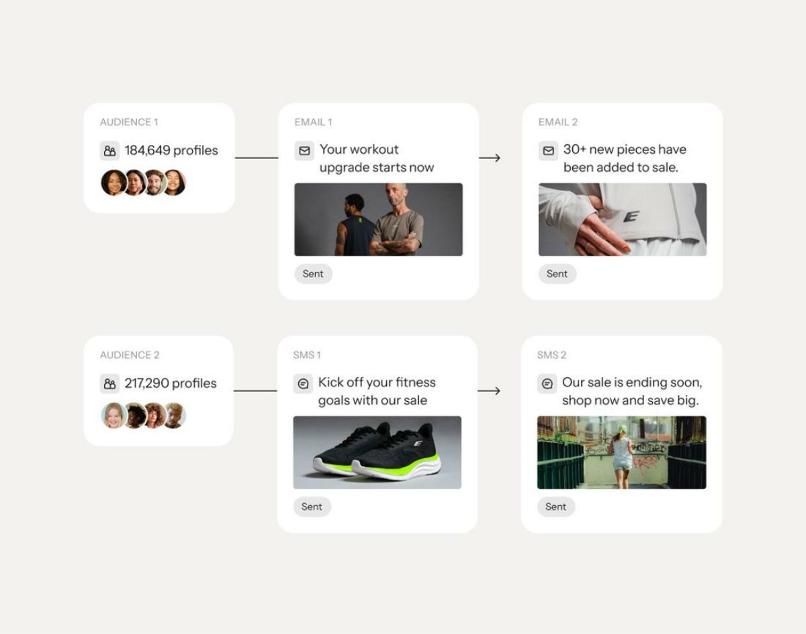

Kit vs Klaviyo: I Ran the Same Email List on Both
Try it: Visit Kit.

Sensible Stack: Streamlining business, whatever your size
Disclosure: the Kit link on this page is a plain link and earns us nothing. Klaviyo has no public affiliate programme, so there is no Klaviyo link on this page.
The short answer
If your list exists to build an audience, a newsletter, a launch list, Kit. It is calmer, cheaper at the start, and free for up to 10,000 subscribers.
If you sell products online and your money is made by flows tied to buying behaviour, abandoned carts, post purchase, product views, Klaviyo, and it is not close.
If you are a one person business doing a bit of both, start on Kit and move only when ecommerce flows would earn more than the extra bill costs. That is exactly the journey this list took, in both directions.
The story, briefly
The list started on Kit. Signup forms, a regular newsletter, steady growth, no complaints. Kit never once felt like work.
The business behind the list sells a physical product online, so when the list grew past a couple of thousand and a proper shop entered the picture, we moved to Klaviyo for its Shopify connection and ecommerce flows. On Klaviyo we built a full six email welcome flow, segmented the list, and ran launches from it. It was powerful, and the data was genuinely better.
Then, in November 2026, we left Klaviyo too, moving email into the shop platform itself and cancelling Klaviyo at the end of its billing cycle. Not because Klaviyo failed. Because at that list size, the combined email and messaging bill, $75 a month in our case, was paying for ecommerce depth while the product was still in development and earning nothing, the stage the business is in until it is selling online. Three platforms, one list, and lessons from each move.
What each one is
Kit (formerly ConvertKit) is email for creators: newsletters, forms, landing pages, sequences and selling digital products, in an interface that stays out of your way. It counts unique, active subscribers.
Klaviyo is email and SMS for ecommerce: deep shop integration, flows triggered by what people buy, browse and abandon, and segmentation by buying behaviour. Since February 2025 it bills on active profiles in the account, which is a wider net than the people you actually email.
Pricing at real list sizes
Checked against vendor pricing pages and published comparisons, November 2026. Kit prices shown billed annually, Klaviyo billed monthly:
- Around 1,000 subscribers: Kit free plan still covers you for broadcasts, forms and landing pages (automations need Creator, about $33 a month). Klaviyo email is about $30 a month, with its free plan ending at 250 profiles.
- Around 10,000 subscribers: Kit Creator is about $116 a month. Klaviyo email is about $150 a month, before SMS.
- Around 25,000: Kit steps up hard past 10,000. Klaviyo is about $400 a month.
The shape is the story: Kit is free far longer, then steps up. Klaviyo charges earlier, and charges for profiles, not just subscribers.
Where Kit wins
- The free plan: up to 10,000 subscribers is the most generous in the category, and it includes unlimited broadcasts, forms and landing pages
- Calm: you can learn it in an afternoon and forget about it between sends
- Creator shaped features: paid newsletters, digital products, recommendations
- Honest counting: unique, active subscribers only
Where Klaviyo wins
- Ecommerce flows: abandoned cart, browse abandonment, post purchase, winback, triggered by real shop data
- Segmentation: who bought what, when, and how often, sliced any way you like
- Revenue reporting: it will tell you, per campaign and per flow, what the email earned
- SMS in the same house, if text is part of your selling
Where each one frustrates
Kit: automations and sequences sit behind the paid plan, and its ecommerce depth is thin by design. If your shop platform is your business, Kit will feel like it stops at the shop door.
Klaviyo: the bill. Active profile pricing means a cold, imported or ageing list costs money every month even when you barely email it, and list hygiene becomes a finance task, not just good practice. The depth also tempts a solo operator into building flows they then have to maintain.
Sensible Stack scores
Kit: Hours saved 4, Tools replaced 3, Solo setup 5, Single seat pricing 4, Exit with data 5.
Klaviyo: Hours saved 4, Tools replaced 4, Solo setup 3, Single seat pricing 2, Exit with data 4.
Ratings by business type
Kit: Solo 10, Micro team 8, Growing business 6, Mid sized 4, Agency 3, Online seller 5, Creator 10. The creator tool, and it shows in both directions.
Klaviyo: Solo 5, Micro team 7, Growing business 9, Mid sized 9, Agency 8, Online seller 10, Creator 4. The ecommerce tool, priced and built like one.
Best suited to: Kit, writers, coaches, course sellers, podcasters and newsletter businesses. Klaviyo, ecommerce and direct to consumer brands, fashion, beauty, food and drink, Shopify led shops.
Verdict
Newsletter, audience, launches from content: Kit, and keep the generous free plan working for you as long as it lasts.
A real online shop where email carries a measurable share of sales: Klaviyo, priced like the revenue tool it is.
One person, a few products, list still growing: Kit first. Move when you can name the specific flow you are missing and what it would earn. That is the rule we now run this list by, learned by paying for all three homes it has lived in.
Try it: Visit Kit. The Kit link is a plain link and earns us nothing. Klaviyo has no public affiliate programme: if Klaviyo is right for you, go direct, with our blessing.
Research note: Pricing checked November 2026. Confirm on vendor sites before buying, plans change. Usage history is the author's own, 2024 to 2026.